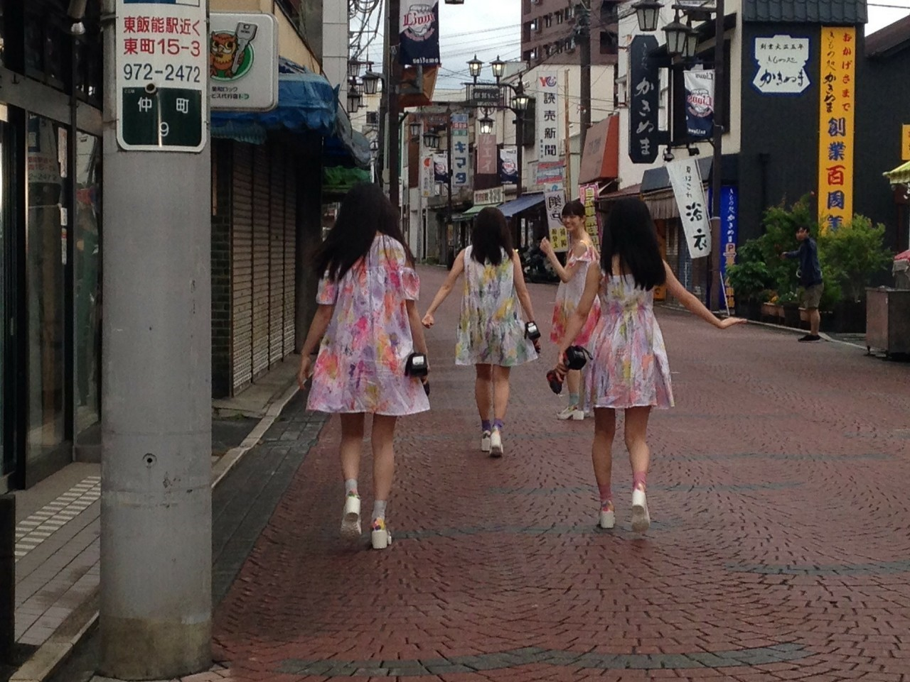

2020/0729Wed愛は与えるものと
歌詞カードを見ながら歌を聴くことが好きなのですが
最近、乃木坂の歌を沢山聴いていて
歌詞が綺麗だなって
MVやお衣装もメンバーの表現も繊細で
最近だとアナスターシャのMVをリピートしてます。
細かくて何回みても楽しめます。
流石衆人監督。☺️
のぎ動画ー。！！！
白米様から約4年、、、
皆んなかっこよく成長しました。
軍団では私自身も沢山成長できました。
最近、乃木坂の歌を沢山聴いていて
歌詞が綺麗だなって
MVやお衣装もメンバーの表現も繊細で
最近だとアナスターシャのMVをリピートしてます。
細かくて何回みても楽しめます。
流石衆人監督。☺️
のぎ動画ー。！！！
白米様から約4年、、、
皆んなかっこよく成長しました。
軍団では私自身も沢山成長できました。

ALL MV COLLECTION２～あの時の彼女たち～
2020年9月9日（水）発売です！！
宜しくお願い致します。☺️
2020/07/29 21:00


コメント(392)
めっちゃ綺麗！！！写真！！！！
やばい！！！蘭世感えぐい！！！！！すき
MV買うね✌️
時間たつの早いわね
今日も蘭世は、美しい
時間たつの早いわね
MVはどの作品も個性があって素敵で大好きです！
発売楽しみにしてます！
今日、帰省から戻るタイミングで白米様とさゆりんご募集中を聞いて、一人でコールしてましたがやはりライブが待ち遠しいです！
MVコレクション絶対買いますね！
大好きやでー！:-)
歌詞カード見ると、曲の聴き方もまた変わってきますよね
意味が伝わるとこだったり、意味が凄く深く感じたり
僕もそうやって聴くのが好きです
MVコレクション！買わせていただきますね！
大好きです
ユウキ
今自分もテスト期間で勉強しながら乃木坂の曲聴いたり歌ったりしてます！
のぎ動画でMVみれるの有難い。
9月はお金がなくなりそうですなぁ笑
大好きです、！
蘭世がブログ更新してくれるだけですごく元気が出ます、、
僕も最近サブスクアプリで聴く時歌詞見てるけど
やっぱ乃木坂の曲っていいよね！
秋元先生の歌詞がすごい胸に染みる〜
特にアンダー曲は歌詞がすっごいいい！！
それにプラスでみんなが踊ってる姿が思い浮かんでいい気持ちになってます！！
いつもありがと〜
おーぐら
＼(^o^)／
ほんとに2期生の良さが詰まったMVだよね！
今まで蘭世の成長はほんとに凄いし、もっと応援したくなったよ！
ブログ沢山ありがとう！元気もらえます！
蘭世さんお疲れ様ーーー！！
とりあえず早く蘭世に逢って色んな事話したいですよ
身体には気をつけてね
短いスパンで拡散くると嬉しいです私は
アナスターシャいいですよねぇ〜
衆人監督の作品はどれも好きです〜
さゆりんご軍団4周年？おめでとうございます！
最近ハマった私は昔のさゆりんご軍団の動画を見て今と全然違う！と驚きました！！
皆さんかっこよくなっている( ͡° ͜ʖ ͡°)
ex大衆買います〜
僕は初めて曲を聴く時、メロディが先行して歌詞が全く入ってこないんですよね、何度も何度も聞いて歌詞を理解してます(笑) 確かに歌詞カードを見ながら曲を聴くっていうのは理にかなっていると思います。今度やって見ますね！
のぎ動画白米様のPVあったっけかな？なかったら早く追加して欲しいな〜。
更新たくさん嬉しい〜〜〜！！！！
私は乃木坂の歌詞だけに注目して聴く時ももちろんあるんだけど、off vocalバージョンの曲だけを聴く時もあるんだ！
個人的に世界で一番孤独なloverの曲がもうとてつもなくかっこいいんですよね、、
ボーダーもすごく好きなんだ〜！！
乃木坂の曲って歌詞も素敵な歌詞多くて励まされたりすること多いんだけど歌詞だけじゃなくて曲だけにも色々考えられたりしてそれはそれですごく楽しいな〜って思う！
MVかあ、、沢山見てきたけど何がお気に入りかなあ、、
色々あって選べないけど笑笑
やっぱり蘭世が参加してるMVはたくさん見てきたから思い入れが強いなあって気はする笑笑
これからも最強で最高のアイドルでいてね
次の更新も待ってます〜！
早く会いたいです(*_*)頑張ってね
いつも流しながら作業したり、聴きながら移動したりしてるけど、歌詞を見ながら聴くとやっぱり違うなーって思う。
改めて聴くと、あーこーゆー歌詞だったなとか気づくこともあるし歌詞見ながら聴くのすごい好き！
白米様から4年はめっちゃ早く感じるけど、いつまで経っても変わらず軍団の大切な曲は変わらないしだいすき(^^)♡
アナスターシャはMVも好きだからいつもfullでYouTubeで見たり、CDの特典でテレビで見たらたくさん見てるよ！大切な曲！
最近たくさんたくさん更新ありがとう！
体には気をつけてね！
いつもたくさんありがとう(^^)♡
だいすきだよ。！
あいらぶゆーのあいら。！♡
そう歌うとメロディーとかだけでなく、歌詞の良さにも気づけたりするから良いですよね〜
ここの歌詞の言い回し好きだな〜とか！
アナスターシャのMVは何回見ても2期生の歴史の奥深さが伝わってきますよね。
白米様からもう4年も経ったんですか！？
早いですね。
広島住みの璃音
のぎ動画は、卒論提出までは我慢します。やることやったから楽しみます！
歌詞カードを見ながら歌を聴く。素敵ですね。私はまだやったこと無いのですが、チャレンジしたいです。
髪染めたのかな？すごく好きな色です。この色に僕も染めることを決意しました
白米様から早4年ですか、時の流れは早いですね。いろいろ振り返ることが多くなって来ました
これからも蘭世を陰ながら応援させてもらいますね。
大好きやおー！
始まりはいつだって そう何かが終わるもの
自分が大好きな曲で大好きな歌詞です。
この曲に出会わなかったらこうして蘭世さんのことも知らなかったし今みたいに生きがいを感じてなかったと思います。
アナスターシャはあの短いmv の中に2期生の今までの起動とかがいろんな形で再現されていて、今でも毎日聴いている曲の一つです。
白米様から4年。
早いような短いような。
ライブではイントロから鳥肌立ちまくりだし、本当にいい曲ですよね！これからも変わらずライブで聞けたらいいな
こんな期間ですがブログやモバメ、沢山送ってきてくれて感謝してます。これからも変わらず蘭世さんでいてください。
大好きです。
僕もいつもですけど乃木坂の曲沢山聴いてます！
Route246はめちゃくちゃいいですね。ランニング中にいつも聴いてます！
滑走路も聴いてるよー
実はちょっと前に衝動買いでCD全部買っちゃいました。
過去の映像から色んな発見があって面白いです！
｢白米様｣4周年おめでとう！
歌詞を見ながら聴くとより深く音楽を楽しめますよね！
体調にはお気を付けくださいねー
ありがとう（ ; ; ）
タイトルはハルジオンが咲く頃ですかね
歌詞を見ながら音楽を聴くと
より一層その曲の事が知れて
もっともっと好きになります
寺田さんがアナスターシャをすきだと言ってるいること
本当に嬉しく思います
わたしもとっても大好きですよ
白米様からもう4年も経つのですね…はやい
今やライブの盛り上がりでかかせない一曲であり
何よりわたしはさゆりんご軍団の皆様が
大好きなのです
武道館、いつまでも待っています
2 が出るのですね
寺田さんが出ていると言うだけで
それだけで買う理由になります
絶対に買います、そしてまた
乃木坂の歴史を振り返ります。
個人的に9月10日が誕生日なので
一日早い自分の誕生日プレゼントにでもしようかな
なんて今日思いました
そう言えば早川さんのブログに
少しだけ寺田さんのエピソードが…
ではまた！！
すきだーーーーー
ゆうき(ゆっちゃん)
アナスターシャほんとにいい曲。
しゅーと最高すぎる！
今日もかわいい
白米さまめっちゃ好き！
最高です！
衆人監督の作品はどれも素晴らしいと思っています。特にアナスターシャはもうほんとに
あんなに2期生が好きで2期生と一緒に仕事できていることが羨ましい限りです。
白米様やアンダー楽曲も収録あるようなので財布に余裕があれば買おうと思っております！
また早くライブ行けるようになったらいいな、今日もブログ更新ありがとう！もうすぐ夏休みだからのぎ動画でいっぱいエネルギーためるね！
アナスターシャはずっと私の大好きなのぎ曲トップ1位だよ(｡>﹏<｡)
さゆりんご軍団もまちゅとらんぜしか居ないよね
でも乃木坂卒業しても、さゆりんご軍団は永遠だよね＼(^o^)／
次の活躍は楽しみだよ＼(^o^)／
これからも頑張って(/･ω･)/
早速予約したよう☺︎ 楽しみだなぁ
ぼくも伊藤衆人監督の作品とても好きです
白米様からもう４年も経ったんですね。
はやいなー。
ALL MV COLLECTION 2買わせてもらいまーす！
自分も公開されて以来本当に毎日アナスターシャのMVみています。
何回見ても感じるものがあります！今更だけど300万回おめでとう！
これからももっとアナスターシャの良さを多くの人に知ってもらえると嬉しいですね！
乃木坂の歌はどれもいい歌で歌詞も最高だよね！
滑走路、最近めっちゃ聴いてます！！
これからも頑張ってください‼︎
さゆりんご軍団も現役乃木坂メンバーだと二人になってしまいますね…
それでも進み続けるのがさゆりんご軍団だと思うから、ライブの夢諦めずにこの状況が、落ち着くのを待ちましょう！
自分は曲だと生まれたままで、滑走路などが好きです！
MVならアナスターシャかな！
見返すのも良きですね！今少し忙しいけれど、それが落ち着いたら楽しもうと思います！
コメントする